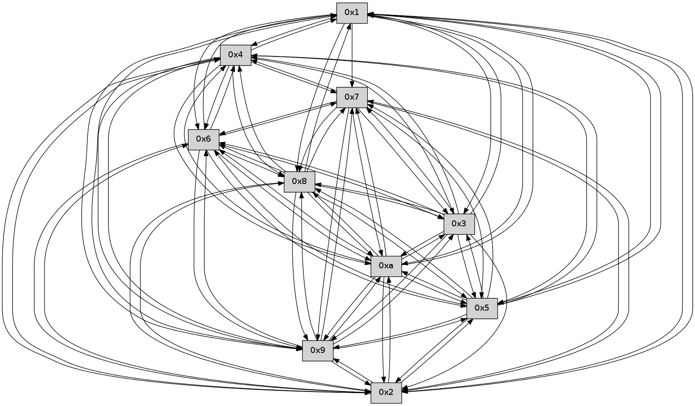

>> << IDX [start] -100 -25 -5 +0 +5 +25 +100 [400.010885954]
 Previous packets
----------------------------------------------------------------------
395.282093 beacon01(faad) #0 coord=01,02,03,04,05,06,07,0a,09,08 cycle=688.0ms assoc
-- color-indic=0 64 fa 5a
395.292075 beacon02(faad) #0 coord=01,02,03,04,05,06,07,0a,09,08 cycle=688.0ms assoc 64 69 6b
395.302078 beacon03(faad) #0 coord=01,02,03,04,05,06,07,0a,09,08 cycle=688.0ms assoc 64 13 26
395.312075 beacon04(faad) #0 coord=01,02,03,04,05,06,07,0a,09,08 cycle=688.0ms assoc 64 64 cc
395.322077 beacon05(faad) #0 coord=01,02,03,04,05,06,07,0a,09,08 cycle=688.0ms assoc 64 1e 81
395.332076 beacon06(faad) #0 coord=01,02,03,04,05,06,07,0a,09,08 cycle=688.0ms assoc 64 90 56
395.342077 beacon07(faad) #0 coord=01,02,03,04,05,06,07,0a,09,08 cycle=688.0ms assoc 64 ea 1b
395.352082 beacon0a(faad) #0 coord=01,02,03,04,05,06,07,0a,09,08 cycle=688.0ms assoc 64 9b 10
395.362081 beacon09(faad) #0 coord=01,02,03,04,05,06,07,0a,09,08 cycle=688.0ms assoc 64 15 c7
395.372082 beacon08(faad) #0 coord=01,02,03,04,05,06,07,0a,09,08 cycle=688.0ms assoc 64 6f 8a
395.384190 [Hello(8): seq=199 sym=5,2,3,4,7,6,9,10,1 sysInfo= stat=5:0,0,0,0/2:4,0,0,0/3:1,0,0,0/4:3,0,0,0/7:1,0,0,0/6:4,0,0,0/9:12,0,0,0/10:6,0,0,0/1:2,0,0,0]
395.386897 [Hello(3): seq=256 sym=1,7,6,2,4,8,9,10,5 sysInfo= stat=1:12,0,0,0/7:5,0,0,0/6:15,0,0,0/2:10,0,0,0/4:12,0,0,0/8:12,0,0,0/9:5,0,0,0/10:15,0,0,0/5:12,0,0,0]
395.392140 [Hello(5): seq=256 sym=7,6,4,3,1,9,8,10,2 sysInfo= stat=7:10,0,0,0/6:12,0,0,0/4:4,0,0,0/3:14,0,0,0/1:10,0,0,0/9:14,0,0,0/8:0,0,0,0/10:0,0,0,0/2:9,0,0,0]
395.395345 [Hello(2): seq=253 sym=4,5,7,6,9,8,10,1 sysInfo= stat=4:14,0,0,0/5:6,0,0,0/7:5,0,0,0/6:12,0,0,0/9:7,0,0,0/8:1,0,0,0/10:14,0,0,0/1:7,0,0,0]
395.401534 [Hello(9): seq=199 sym=5,2,3,4,7,6,8,10,1 sysInfo= stat=5:10,0,0,0/2:7,0,0,0/3:6,0,0,0/4:15,0,0,0/7:2,0,0,0/6:8,0,0,0/8:4,0,0,0/10:11,0,0,0/1:15,0,0,0]
395.404432 [Hello(10): seq=188 sym=6,3,2,5,9,8,7,4,1 sysInfo= stat=6:2,0,0,0/3:7,0,0,0/2:15,0,0,0/5:11,0,0,0/9:8,0,0,0/8:11,0,0,0/7:6,0,0,0/4:4,0,0,0/1:12,0,0,0]
395.408165 [Hello(4): seq=256 sym=5,7,6,2,3,9,8,10,1 sysInfo= stat=5:9,0,0,0/7:11,0,0,0/6:14,0,0,0/2:7,0,0,0/3:4,0,0,0/9:13,0,0,0/8:2,0,0,0/10:6,0,0,0/1:10,0,0,0]
----------------------------------------------------------------------
396.070225 beacon01(faad) #0 coord=01,02,03,04,05,06,07,0a,09,08 cycle=688.0ms assoc
-- color-indic=0 64 2e 6f
396.080207 beacon02(faad) #0 coord=01,02,03,04,05,06,07,0a,09,08 cycle=688.0ms assoc 64 bd 5e
396.090209 beacon03(faad) #0 coord=01,02,03,04,05,06,07,0a,09,08 cycle=688.0ms assoc 64 c7 13
396.100209 beacon04(faad) #0 coord=01,02,03,04,05,06,07,0a,09,08 cycle=688.0ms assoc 64 b0 f9
396.110209 beacon05(faad) #0 coord=01,02,03,04,05,06,07,0a,09,08 cycle=688.0ms assoc 64 ca b4
396.120209 beacon06(faad) #0 coord=01,02,03,04,05,06,07,0a,09,08 cycle=688.0ms assoc 64 44 63
396.130209 beacon07(faad) #0 coord=01,02,03,04,05,06,07,0a,09,08 cycle=688.0ms assoc 64 3e 2e
396.140217 beacon0a(faad) #0 coord=01,02,03,04,05,06,07,0a,09,08 cycle=688.0ms assoc 64 4f 25
396.150214 beacon09(faad) #0 coord=01,02,03,04,05,06,07,0a,09,08 cycle=688.0ms assoc 64 c1 f2
396.160213 beacon08(faad) #0 coord=01,02,03,04,05,06,07,0a,09,08 cycle=688.0ms assoc 64 bb bf
396.171078 [Hello(1): seq=165 sym=4,2,9,5,10,3,8,6,7 sysInfo= stat=4:15,0,0,0/2:3,0,0,0/9:11,0,0,0/5:5,0,0,0/10:0,0,0,0/3:6,0,0,0/8:6,0,0,0/6:9,0,0,0/7:13,0,0,0]
396.175475 [Hello(7): seq=256 sym=2,3,5,6,4,8,9,10,1 sysInfo= stat=2:11,0,0,0/3:9,0,0,0/5:0,0,0,0/6:9,0,0,0/4:8,0,0,0/8:3,0,0,0/9:6,0,0,0/10:5,0,0,0/1:7,0,0,0]
396.178987 [Hello(6): seq=256 sym=2,3,5,4,7,9,8,10,1 sysInfo= stat=2:13,0,0,0/3:13,0,0,0/5:11,0,0,0/4:0,0,0,0/7:15,0,0,0/9:10,0,0,0/8:11,0,0,0/10:5,0,0,0/1:0,0,0,0]
----------------------------------------------------------------------
396.858357 beacon01(faad) #0 coord=01,02,03,04,05,06,07,0a,09,08 cycle=688.0ms assoc
-- color-indic=0 64 92 6a
396.868338 beacon02(faad) #0 coord=01,02,03,04,05,06,07,0a,09,08 cycle=688.0ms assoc 64 01 5b
396.878339 beacon03(faad) #0 coord=01,02,03,04,05,06,07,0a,09,08 cycle=688.0ms assoc 64 7b 16
396.888339 beacon04(faad) #0 coord=01,02,03,04,05,06,07,0a,09,08 cycle=688.0ms assoc 64 0c fc
396.898339 beacon05(faad) #0 coord=01,02,03,04,05,06,07,0a,09,08 cycle=688.0ms assoc 64 76 b1
396.908339 beacon06(faad) #0 coord=01,02,03,04,05,06,07,0a,09,08 cycle=688.0ms assoc 64 f8 66
396.918339 beacon07(faad) #0 coord=01,02,03,04,05,06,07,0a,09,08 cycle=688.0ms assoc 64 82 2b
396.928344 beacon0a(faad) #0 coord=01,02,03,04,05,06,07,0a,09,08 cycle=688.0ms assoc 64 f3 20
396.938345 beacon09(faad) #0 coord=01,02,03,04,05,06,07,0a,09,08 cycle=688.0ms assoc 64 7d f7
396.948344 beacon08(faad) #0 coord=01,02,03,04,05,06,07,0a,09,08 cycle=688.0ms assoc 64 07 ba
396.962525 [Hello(10): seq=189 sym=6,3,2,5,9,8,7,4,1 sysInfo= stat=6:3,0,0,0/3:7,0,0,0/2:15,0,0,0/5:11,0,0,0/9:8,0,0,0/8:11,0,0,0/7:7,0,0,0/4:5,0,0,0/1:13,0,0,0]
396.967454 [Hello(4): seq=257 sym=5,7,6,2,3,9,8,10,1 sysInfo= stat=5:9,0,0,0/7:12,0,0,0/6:15,0,0,0/2:7,0,0,0/3:4,0,0,0/9:13,0,0,0/8:2,0,0,0/10:6,0,0,0/1:11,0,0,0]
396.970141 [Hello(9): seq=200 sym=5,2,3,4,7,6,8,10,1 sysInfo= stat=5:10,0,0,0/2:7,0,0,0/3:6,0,0,0/4:0,0,0,0/7:3,0,0,0/6:9,0,0,0/8:4,0,0,0/10:12,0,0,0/1:0,0,0,0]
396.975580 [Hello(8): seq=200 sym=5,2,3,4,7,6,9,10,1 sysInfo= stat=5:1,0,0,0/2:5,0,0,0/3:2,0,0,0/4:4,0,0,0/7:2,0,0,0/6:5,0,0,0/9:13,0,0,0/10:7,0,0,0/1:3,0,0,0]
396.979858 [Hello(2): seq=254 sym=4,5,7,6,9,8,10,1 sysInfo= stat=4:15,0,0,0/5:6,0,0,0/7:6,0,0,0/6:13,0,0,0/9:8,0,0,0/8:1,0,0,0/10:15,0,0,0/1:8,0,0,0]
----------------------------------------------------------------------
397.646488 beacon01(faad) #0 coord=01,02,03,04,05,06,07,0a,09,08 cycle=688.0ms assoc
-- color-indic=0 64 56 64
397.656470 beacon02(faad) #0 coord=01,02,03,04,05,06,07,0a,09,08 cycle=688.0ms assoc 64 c5 55
397.666472 beacon03(faad) #0 coord=01,02,03,04,05,06,07,0a,09,08 cycle=688.0ms assoc 64 bf 18
397.676470 beacon04(faad) #0 coord=01,02,03,04,05,06,07,0a,09,08 cycle=688.0ms assoc 64 c8 f2
397.686471 beacon05(faad) #0 coord=01,02,03,04,05,06,07,0a,09,08 cycle=688.0ms assoc 64 b2 bf
397.696470 beacon06(faad) #0 coord=01,02,03,04,05,06,07,0a,09,08 cycle=688.0ms assoc 64 3c 68
397.706472 beacon07(faad) #0 coord=01,02,03,04,05,06,07,0a,09,08 cycle=688.0ms assoc 64 46 25
397.716477 beacon0a(faad) #0 coord=01,02,03,04,05,06,07,0a,09,08 cycle=688.0ms assoc 64 37 2e
397.726476 beacon09(faad) #0 coord=01,02,03,04,05,06,07,0a,09,08 cycle=688.0ms assoc 64 b9 f9
397.736476 beacon08(faad) #0 coord=01,02,03,04,05,06,07,0a,09,08 cycle=688.0ms assoc 64 c3 b4
397.747622 [Hello(6): seq=257 sym=2,3,5,4,7,9,8,10,1 sysInfo= stat=2:14,0,0,0/3:14,0,0,0/5:11,0,0,0/4:1,0,0,0/7:15,0,0,0/9:11,0,0,0/8:12,0,0,0/10:6,0,0,0/1:0,0,0,0]
397.754019 [Hello(1): seq=166 sym=4,2,9,5,10,3,8,6,7 sysInfo= stat=4:0,0,0,0/2:4,0,0,0/9:12,0,0,0/5:5,0,0,0/10:1,0,0,0/3:7,0,0,0/8:7,0,0,0/6:10,0,0,0/7:14,0,0,0]
397.756551 [Hello(7): seq=257 sym=2,3,5,6,4,8,9,10,1 sysInfo= stat=2:12,0,0,0/3:9,0,0,0/5:0,0,0,0/6:10,0,0,0/4:9,0,0,0/8:4,0,0,0/9:7,0,0,0/10:6,0,0,0/1:7,0,0,0]
----------------------------------------------------------------------
398.434621 beacon01(faad) #0 coord=01,02,03,04,05,06,07,0a,09,08 cycle=688.0ms assoc
-- color-indic=0 64 ea 61
398.444603 beacon02(faad) #0 coord=01,02,03,04,05,06,07,0a,09,08 cycle=688.0ms assoc 64 79 50
398.454602 beacon03(faad) #0 coord=01,02,03,04,05,06,07,0a,09,08 cycle=688.0ms assoc 64 03 1d
398.464604 beacon04(faad) #0 coord=01,02,03,04,05,06,07,0a,09,08 cycle=688.0ms assoc 64 74 f7
398.474603 beacon05(faad) #0 coord=01,02,03,04,05,06,07,0a,09,08 cycle=688.0ms assoc 64 0e ba
398.484605 beacon06(faad) #0 coord=01,02,03,04,05,06,07,0a,09,08 cycle=688.0ms assoc 64 80 6d
398.494605 beacon07(faad) #0 coord=01,02,03,04,05,06,07,0a,09,08 cycle=688.0ms assoc 64 fa 20
398.504608 beacon0a(faad) #0 coord=01,02,03,04,05,06,07,0a,09,08 cycle=688.0ms assoc 64 8b 2b
398.514610 beacon09(faad) #0 coord=01,02,03,04,05,06,07,0a,09,08 cycle=688.0ms assoc 64 05 fc
398.524609 beacon08(faad) #0 coord=01,02,03,04,05,06,07,0a,09,08 cycle=688.0ms assoc 64 7f b1
398.535760 [Hello(5): seq=258 sym=7,6,4,3,1,9,8,10,2 sysInfo= stat=7:12,0,0,0/6:14,0,0,0/4:6,0,0,0/3:14,0,0,0/1:12,0,0,0/9:0,0,0,0/8:1,0,0,0/10:2,0,0,0/2:11,0,0,0]
398.539113 [Hello(10): seq=190 sym=6,3,2,5,9,8,7,4,1 sysInfo= stat=6:4,0,0,0/3:7,0,0,0/2:0,0,0,0/5:11,0,0,0/9:9,0,0,0/8:12,0,0,0/7:8,0,0,0/4:6,0,0,0/1:14,0,0,0]
398.541803 [Hello(4): seq=258 sym=5,7,6,2,3,9,8,10,1 sysInfo= stat=5:9,0,0,0/7:13,0,0,0/6:0,0,0,0/2:8,0,0,0/3:4,0,0,0/9:14,0,0,0/8:3,0,0,0/10:6,0,0,0/1:12,0,0,0]
398.545661 [Hello(8): seq=201 sym=5,2,3,4,7,6,9,10,1 sysInfo= stat=5:1,0,0,0/2:6,0,0,0/3:2,0,0,0/4:4,0,0,0/7:3,0,0,0/6:6,0,0,0/9:13,0,0,0/10:7,0,0,0/1:4,0,0,0]
398.548511 [Hello(2): seq=255 sym=4,5,7,6,9,8,10,1 sysInfo= stat=4:15,0,0,0/5:6,0,0,0/7:7,0,0,0/6:14,0,0,0/9:8,0,0,0/8:1,0,0,0/10:15,0,0,0/1:9,0,0,0]
398.555512 [Hello(9): seq=201 sym=5,2,3,4,7,6,8,10,1 sysInfo= stat=5:10,0,0,0/2:8,0,0,0/3:6,0,0,0/4:0,0,0,0/7:4,0,0,0/6:10,0,0,0/8:5,0,0,0/10:12,0,0,0/1:1,0,0,0]
398.558052 [Hello(3): seq=258 sym=1,7,6,2,4,8,9,10,5 sysInfo= stat=1:14,0,0,0/7:7,0,0,0/6:1,0,0,0/2:12,0,0,0/4:14,0,0,0/8:13,0,0,0/9:7,0,0,0/10:1,0,0,0/5:13,0,0,0]
----------------------------------------------------------------------
399.222753 beacon01(faad) #0 coord=01,02,03,04,05,06,07,0a,09,08 cycle=688.0ms assoc
-- color-indic=0 64 de 79
399.232735 beacon02(faad) #0 coord=01,02,03,04,05,06,07,0a,09,08 cycle=688.0ms assoc 64 4d 48
399.242736 beacon03(faad) #0 coord=01,02,03,04,05,06,07,0a,09,08 cycle=688.0ms assoc 64 37 05
399.252738 beacon04(faad) #0 coord=01,02,03,04,05,06,07,0a,09,08 cycle=688.0ms assoc 64 40 ef
399.262737 beacon05(faad) #0 coord=01,02,03,04,05,06,07,0a,09,08 cycle=688.0ms assoc 64 3a a2
399.272735 beacon06(faad) #0 coord=01,02,03,04,05,06,07,0a,09,08 cycle=688.0ms assoc 64 b4 75
399.282738 beacon07(faad) #0 coord=01,02,03,04,05,06,07,0a,09,08 cycle=688.0ms assoc 64 ce 38
399.292740 beacon0a(faad) #0 coord=01,02,03,04,05,06,07,0a,09,08 cycle=688.0ms assoc 64 bf 33
399.302742 beacon09(faad) #0 coord=01,02,03,04,05,06,07,0a,09,08 cycle=688.0ms assoc 64 31 e4
399.312740 beacon08(faad) #0 coord=01,02,03,04,05,06,07,0a,09,08 cycle=688.0ms assoc 64 4b a9
399.323918 [Hello(7): seq=258 sym=2,3,5,6,4,8,9,10 sysInfo= stat=2:13,0,0,0/3:10,0,0,0/5:1,0,0,0/6:10,0,0,0/4:10,0,0,0/8:5,0,0,0/9:8,0,0,0/10:7,0,0,0]
399.328841 [Hello(6): seq=258 sym=2,3,5,4,7,9,8,10,1 sysInfo= stat=2:15,0,0,0/3:15,0,0,0/5:12,0,0,0/4:2,0,0,0/7:0,0,0,0/9:12,0,0,0/8:13,0,0,0/10:7,0,0,0/1:1,0,0,0]
399.339512 [Hello(1): seq=167 sym=4,2,9,5,10,3,8,6,7 sysInfo= stat=4:1,0,0,0/2:5,0,0,0/9:13,0,0,0/5:6,0,0,0/10:2,0,0,0/3:8,0,0,0/8:8,0,0,0/6:10,0,0,0/7:15,0,0,0]